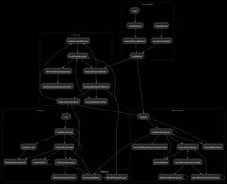

WebKit
https://webkit.org
Open Source Web Browser Engine
フィード

Submit your ideas for Interop 2027
WebKit
It’s that exciting time of year again when we start considering Interop proposals for next year!
2日前

Fixing Top-Level Await in Safari
WebKit
WebKit for Safari 27 adds full spec compliance for top-level `await`.
3日前

Release Notes for Safari Technology Preview 251
WebKit
Safari Technology Preview Release 251 is now available for download for macOS Golden Gate and macOS Tahoe.
10日前
Release Notes for Safari Technology Preview 250
WebKit
Safari Technology Preview Release 250 is now available for download for macOS Golden Gate and macOS Tahoe.
23日前
Release Notes for Safari Technology Preview 249
WebKit
Safari Technology Preview Release 249 is now available for download for macOS Golden Gate and macOS Tahoe.
1ヶ月前
Release Notes for Safari Technology Preview 248
WebKit
Safari Technology Preview Release 248 is now available for download for macOS Golden Gate and macOS Tahoe.
1ヶ月前
Introducing the Safari MCP server for web developers
WebKit
Update: In Safari 27 beta and Safari Technology Preview 247, we’re introducing the Safari MCP server — a Model Context Protocol server for web developers that makes your web development and debugging workflow faster and more powerful.
2ヶ月前
Release Notes for Safari Technology Preview 247
WebKit
Safari Technology Preview Release 247 is now available for download for macOS Golden Gate and macOS Tahoe.
2ヶ月前
Release Notes for Safari Technology Preview 246
WebKit
Safari Technology Preview Release 246 is now available for download for macOS Golden Gate and macOS Tahoe.
3ヶ月前